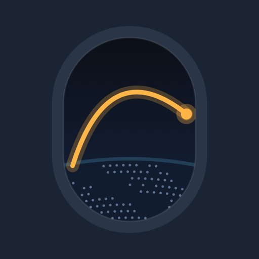

WindowsideLive flight
Live map and positions by ADSB.lol community receivers (ODbL). Route from adsbdb.com. Over the ocean the plane can disappear for a while.
This link has no flight
Ask whoever sent it to share it again from Windowside.